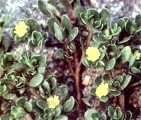
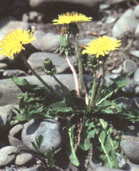
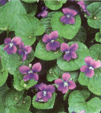
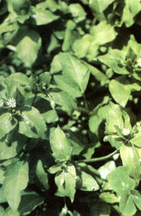
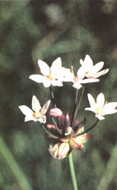
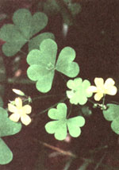

Tossed delicacies
AT THIS TIME OF YEAR, WEEDING IS one of our most important gardening chores. Weeds, those unwelcome trespassers, can grow rapidly, choking out our tender hybrid flowers and vegetables. Although we spend so much of our time fighting them, comparatively few of us actually know much about weeds.
Have you ever wondered why some plants make weeds of themselves? It's as if this wild vegetation prefers human company to life in the pristine wilderness. Ironically, it's because many of these plants were naturalized many centuries ago by our ancestors for food, medicine, or other purposes-they're actually semidomesticated. Although we abandoned them as our lifestyles changed, they faithfully continue to follow us!
Most of those dreadful weeds are edible. Some are choice, and are cultivated in other countries and by those of us who still appreciate them. I've been eating and enjoying beneficial weeds for over 20 years in addition to more "normal" foods, for their flavor, freshness, and nutritional value. They're also free-another inescapable attribute.
By using those weeds as food, you will realize a number of benefits: One, You get an "early harvest" at a time when most gardens are just getting started. Two, you increase the productivity of your garden. (Weeds, you'll come to see, are not pests-they're homegrown food.) Three, as with most other homegrown food, you'll save money. This particular food is especially economical-it's totally free (you didn't even have to pay for the seeds). Four, you'll expand your own culinary horizons. There are approximately 50,000 edible plant species in the world, but the average American eats only 30. Hence, if you only use three kinds of weeds as part of your diet, you've probably increased your food choices by 10%! And five, it's easier to avoid using herbicides once you view weeds as food, helping the environment.
Although wild plant life varies in different climate zones, there are quite a number of weeds that are considered "cosmopolitan"- they thrive nearly everywhere. Here are just a few of the most pervasive garden, or "lawn" weeds. If you are familiar with these plants, feel free to experiment with them. But don't try eating anything you're not sure of. Check its identity with a good field guide, your local agricultural extension agent or park ranger. By the way, many nature centers and state parks offer edible plant walks. This is one of the best ways to learn more about wild foods.
Also known as "pulley." this common garden weed is rich in flavor and nutrients. Purslane's a popular vegetable in many parts of the world, including Holland and France. If you've visited Mexico, you may have enjoyed it as "verdolago." In fact, part of its scientific name, oleracea, actually means "like a garden vegetable." No less a personage than Henry David Thoreau praised purslane in the classic, Walden, when he wrote "I have made a satisfactory dinner off a dish of purslane, which I gathered and boiled. Yet, men have come to such a pass that they frequently starve, not for lack of necessaries but for want of luxuries."
Purslane prefers sunny spots in sandy, rich soil. It carpets the ground, rarely growing more than five inches high. The succulent, purplish-green leaves range from 1/2 to two inches long. The tender red stems bear tiny, five-petaled yellow flowers at their tips. The whole plant is edible. Some purslane lovers have found that they can use one plant from June till frost, just by snipping off the tips of the stems. A fast grower, the plant soon replaces them.
The most common way of eating purslane is as Thoreau did-by boiling the stems and leaves (no need to remove flowers or seeds). Some people like to mix the cooked greens with bacon and vinegar. It has a tangy flavor and a mucilaginous quality, similar to okra, and can be used as a thickener in soups, like gumbo, or stew. If you don't like the "slimy" texture, you can counteract it by breading and frying, a delicious substitute.
Raw purslane has a pleasant crunch and is a good salad green. An interesting "purslane cole slaw" can be made by chopping up the raw leaves and stems, mixing with chopped carrots or other raw vegetables and blending with commercial coleslaw dressing.
Purslane's great taste, high level of nutrition and low caloric content (the plant is 92% water, similar to cabbage) make it a favorite. Euell Gibbons was particularly fond of purslane and liked to experiment with it, as reported in his famous book, Stalking the Wild Asparagus. Among other things, he discovered that it pickled well. He packed two pint jars with purslane stems and leaves, then covered them with a mixture of one cup white vinegar, two cups cold water, 1/4 cup salt and 1/2 teaspoon alum. Then he added two dill flowers, a clove of garlic, and one small red pepper. After sealing the jars, he let them sit in a dark place for at least one month. "No cooking, no processing, no fuss, no bother," states he. Other people have found that any good dill or bread-and-butter pickle recipe works equally well.
The seeds are edible as a grain. Gather, grind, and cook them into mush, or mix 50-50 with regular flour for use in breads, etc. Although tiny, they are numerous. One plant can produce as many as 52,000 seeds. An easy way to collect them is to harvest several plants. Then, just lay them down on a piece of plastic. Over a period of a few days, the seeds will ripen and the seed pods will burst open on their own. Shake them out over the plastic and strain to remove the seeds from the chaff. This was said to be a popular food among the Indians of the Southwest at one time.
A 1/3 cup serving of cooked purslane yields 24 calories, 1.7 grams protein, 78 mg calcium, 39 grams phosphorous, 67 mg magnesium, 488 mg potassium, 3.5 mg iron, 2500 IU Vitamin A and 25 grams Vitamin C. Additionally, purslane is a good source of heart-protective Omega-3 fatty acids.
Like most Americans, dandelion is an immigrant, brought here by the earliest English settlers. It was considered absolutely essential for survival and was given an honored place in the kitchen gardens of the day, providing food, medicine, and wine. Because it is an effective diuretic, it has been used for kidney stones, weight loss, and edema. They also recognize a "bitter principle" in the plant that aids digestion and stimulates the liver and gall bladder. Its ability to cleanse the system of toxic matter makes it valuable in clearing up chronic skin disorders.
Although these are mostly folk uses, modern researchers are finding that, indeed, regular use of dandelion roots and greens does stimulate the liver to produce more bile, aiding in digestion, especially of fat (which could be part of the reason that it helps with weight loss).
Related to daisies and chrysanthemums, dandelions are so familiar to us that they really need no description. Botanists describe them as "herbaceous perennials," meaning that they grow back from the same root year after year, but never get woody. A low-growing plant, the leaves grow in a rosette (or circle), rarely exceeding 10 inches in length. If constantly mowed, as most lawn weeds are, the leaves flatten out and grow to only a few inches. Try experimenting by not mowing your dandelions-you'll see them grow into handsome plants! The upright flower stalk bears a fluffy yellow flower, which soon metamorphoses into the familiar blowball of seeds that children love to wish upon.
Every part of the dandelion, with the exception of the seeds and flower stalk, is useful. Eat the young leaves in early spring, either raw or steamed. Try to find them before the flower appears, or they will be quite bitter, although still nutritious. To reduce the bitterness, blanche the greens in boiling water, pour off the water, and then complete boiling them in fresh water. They will still have some bitterness, but persevere: Dandelion greens, like oysters, are an acquired taste.
Dig up the roots anytime, although they will be highest in nutrients in the fall. Boil them like parsnips. You can also use them as a caffeine-free coffee substitute, while enjoying dandelion's health benefits. Here's how to do it: Cut the cleaned roots into small pieces and roast in a 400°F oven until dark brown. Cool, then grind in a coffee grinder or blender on the "coarse" setting. Prepare as you do your regular coffee. Some people prefer to mix the roasted roots with standard coffee, to smooth its flavor and reduce their caffeine intake. The flower buds, sauteed in butter or margarine, make an interesting and colorful side dish. Shred the flowers into salads for color and flavor.
There are many, many recipes for dandelion wine. This one is courtesy of North Georgia naturalist Marie Mellinger. It makes a thick, sweet wine that's good for sipping on cold winter nights.
Dandelion Wine
1 gallon dandelion flowers with all the green parts removed
1 gallon boiling water
4 lemons
4 oranges
4 pounds sugar
1 cake yeast
Pour boiling water over blossoms, let stand until the flowers rise to the surface (24-48 hours). Strain into a glass or stone jug or jar. Add lemons, oranges, sugar, and yeast. Stir four or five times a day until it stops fermenting. Keep well covered in a cool, place. In two weeks, strain, bottle and cork tightly. Let sit at least two months before drinking.
A 1/3 cup serving of the cooked greens contain 45 calories, 2.7 grams protein, 1.6 grams fiber, 187 mg calcium, 3.10 mg iron (about the same as spinach), 36 mg magnesium, 88 mg phosphorous, 297 mg potassium, 35 mg Vitamin C (the minimum daily requirement) and 14,000 IU Vitamin A (similar to carrots).
Half a cup of violets has as much Vitamin C as four oranges!
In Greek mythology, the philandering Zeus, king of the gods, seduced a lovely river-nymph named lo. To shield her from his jealous wife, he changed her into a white heifer. Io wept over being reduced to eating coarse grass, so Zeus created the sweet, delicate violet from lo's own tears, to give her a more suitable feed. This story may not be too politically correct these days, but some of the points about violets still fit.
Violets are one of our best-loved wild-flowers. And, just as they were good food for poor lo, they are still good food for us. High in Vitamin A, Vitamin C (1/2 cup of the raw flowers contains as much Vitamin C as four oranges!), iron and calcium, violet can be enjoyed for more than their dainty appearance.
Like dandelions, violets are so familiar that they need little description. Small. herbaceous perennials, they spread via an underground stem, or "rhizome." And despite their size and seeming delicacy, they are tough survivors and downright aggressive in the right conditions. When they take over a flower bed, even the most laid-back gardeners start seeing them less as wild flowers than weeds. If you start eating them, you'll be able to control their growth and still enjoy them.
There are more than 20 species of violets growing in North America, with flowers ranging from white to yellow to blue and purple. All are edible, but most people prefer the flavor of the darker colored flowertypes.
Candied violets are a traditional confection in Britain. They're easy to make and sensational gifts.
Collect a bunch of fresh flowers, wash and dry carefully.
Separate one egg. Whip the white until just foamy. Save the yolk for another purpose.
Dip the flowers, one at a time, into the egg white. Be sure to cover all surfaces. Then dip the flowers, one at a time, into a dish of super-fine white sugar. (If super-fine is not available, run regular white sugar through the blender for a few minutes.) It is important to cover all surfaces.
How you finish this is up to you. You may simply roll the flower into a little ball, or, to be really fancy, use a toothpicks to spread each flower back to its original shape. Sprinkle with a little more super-tine sugar.
Set the flowers on waxed paper to dry. Once dry, they will keep for several months if stored in tins or other airtight containers.
Use to garnish cakes or pastries.
Violet leaves are good to eat raw or cooked. Like purslane, they have a mild mucilaginous quality and can be added to cooked dishes as a thickener. I like to add them to salads, mixing in their dark green leaves with the lighter leaves of domestic greens. The flowers also make a colorful addition to salads. Mix cooked violet greens with other cooked vegetables, such as spinach, for flavor and nutrition.
As violet leaves get older, they get tough and bitter. Although still edible, they are not as pleasant to eat raw as when they were young and tender. I have had good success making a tempura with the older leaves. Simply mix a few tablespoons of flour with cold water to make a thin paste. Add a pinch of salt or baking soda. Coat the washed, dried leaves with the batter and drop into a pan of very hot vegetable oil. The tempura cooks rapidly and absorbs little oil. These make a crunchy treat or appetizer.
Medicinally, violet leaves are an effective laxative. Due to their mucilaginous qualities and high fiber content, regular use will keep you regular, too. For that reason, most people don't eat too many leaves at one sitting. The leaves should be prepared for use mixed with other greens, as in salads or cooked vegetables, rather than eaten as a "stand-alone" dish, unless for medicinal use.
Chickweed is quite possibly the most common weed in the world. It has been found growing north of the Arctic Circle, at the tip of South America, and everywhere in between. It is also a highly valued plant in places other than the United States, and is still cultivated in many countries, especially in Asia.
It, too, is a small plant, rarely reaching more than five inches in height. Weak-stemmed, it seems to spread out horizontally along the ground. It prefers rich soil, a little shelter, and cool weather. Hence, it often is the first thing to appear in the garden, sometimes as early as February. Here in Georgia, it is abundant throughout fall, winter, and early spring, withering away when the weather gets hot. In more temperate climates, it can be found all summer, often in the shade of a fence or larger plant.
The whole plant, above ground, is edible raw or cooked. Raw, it has little flavor. For this reason, it is one of my favorite plants, because with its mild flavor and crunchy texture, I can use it just like lettuce, as the base for salads. It mixes well with any other more strongly-flavored salad fixin's such as watercress, radishes, and peppers. With a classic vinaigrette dressing, chickweed is my favorite salad during the time of year that lettuce is most expensive.
Cook chickweed just like spinach: boiled or steamed, it even tastes like an extremely mild spinach. As it cooks down quite a bit, use a lot. Because its flavor does not overpower other vegetables, it's a good thing to add to the "greens pot" to stretch other greens. For instance, you could mix chickweed, dandelions and violets as your vegetable course for supper.
Chickweed packs a nutritional punch, too. It contains so much Vitamin C that at one time it was used to treat scurvy. It's also a good source of the B vitamins and several minerals, most notably, copper, and iron.
When you mow your lawn, does the scent of onion or garlic fill the air? Lucky you! There are a great many species of these two closely-related herbs, but any plant that smells strongly of onion or garlic is onion or garlic and is edible.
Dig the bulb up to see which one you have. Just like their domesticated relatives, onions will be layered and garlic will be made up of cloves. Don't be fooled by their small size-their flavor is often stronger than domesticated varieties. Use the green tops like chives or green onion tops. In the summer, the underground bulb withers away. No problem-you'll find the bulblets at the top of the plant are good eating, too. Even the flowers have the distinctive onion/garlic flavor, and make an interesting addition to early summer salads.
An easy way to familiarize yourself with using this wild herb is to make wild onion or garlic toast. Simply melt a few tablespoons of butter and mix in about a teaspoon or so of chopped wild onion or garlic (bulb or green tops). With a pastry brush, spread the butter mixture onto sliced bread. Place under broiler until brown.
Onions and garlic are favorite medicinal plants, as well. They are antiseptic and help lower blood pressure.
Wood sorrel, also known as "sourgrass", is one of those little weeds that children love to nibble on. Unfortunately, once we grow up, we forget about it. What a shame. This tasty and abundant herb is a valuable addition to the kitchen garden.
Containing oxalic acid, wood sorrel has a lemony tang that blends well with other foods. On camping trips, I have stuffed fresh-caught fish with wood sorrel and grilled them over the campfire for a real treat. There's no need to carry lemons in your backpack with wood sorrel available!
Another small plant, wood sorrel generally grows only about six to eight inches high. The pale green leaves are composed of three leaflets, similar to clover. In fact, many beginning foragers confuse wood sorrel with clover. (Don't worry if you do, because clover, too, is edible. But it is rather tough and lacks the lemony flavor of wood sorrel.) It is not difficult to tell the difference. Clover leaves are dark green and the leaflets are round, with saw-tooth edges. There is often the mark of a white circle on the leaflets, too. Wood sorrel leaves are pale green and the leaflets, by contrast, are heartshaped with smooth edges. The flowers are quite different. Clovers have white or red, complex flowers. Sorrel flowers, by contrast, are quite simple, five-petaled and trumpet shaped. They may be white, pink, violet, or yellow. Those growing in backyards and gardens are generally yellow.
The whole plant, aboveground, is edible, although you probably will want to discard the tough stems. The raw leaves, flowers and seed pods make a refreshing addition to any salad. The crunchy seed pods, in particular, are a treat.
You may also want to add wood sorrel to your pot of mixed greens. It, too, can be boiled or steamed like spinach, although cooking reduces its volume considerably. A little wood sorrel added to sauces and soups can make a big difference. In fact, the delicious kosher soup known as "Schav" is based on domestic sorrel, which has the same flavor.
Schav
Add 1/2 to 1 cup of the herb to one quart of boiling water
Add one small, chopped onion (wild onion works well!)
Cook just until tender, 5-10 minutes.
Remove from heat and add 1/2 teaspoon sour salt, if desired.
Mix well and refrigerate.
This soup is eaten cold and, with salad and crackers, makes a refreshing summer meal. You may want to add a dollop of sour cream to each serving.
I hope you will want to try eating some of the weeds in your own backyard. They'll add freshness, flavor, and variety to your diet, as well as increasing the productivity of your garden. None of the plants mentioned in this article are endangered in any way. But if you get very interested in foraging, be sure to avoid harming endangered plants. I'd like to hear about your adventures. Bon appetit!
Editor's Note: Deborah Duchon teaches wild edibles classes, and is the editor of "The Wild Foods Forum", a monthly newsletter for foragers. 12 issues, $15.00, sample copy, $1.50. She can be reached at 4 Carlisle Way NE, Atlanta, GA 30308.
|
|
 |
 |
|
 |
 |
 |
|
 |
|
|